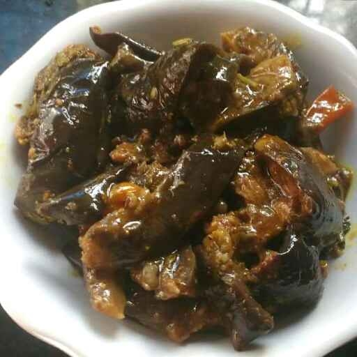

Baigan

Discription
a simple and healthy dry curry or sabzi recipe prepared mainly with purple brinjal and spiced with sambar or rasam powder. it is an ideal side dish or sabzi to your daily dinner or lunch and can be relished with chapathi or dal rice / rasam rice combination.
Ingrediants
- 3 tbsp oil
- 1 tsp mustard oil
- ½ tsp chana dal
- few curry leaves
- 1 onion sliced
- 2 green chilli slit
- 1 tomato, finely chopped
- ¼ tsp turmeric
- ½ tsp salt
- 1 Baingan chopped
- 2 tbsp cariander
Directions
- Step 1
- firstly, in a large kadai heat 3 tbsp oil and splutter 1 tsp mustard, 1 tsp urad dal, ½ tsp chana dal and few curry leaves.
add in 1 sliced onion and saute.
- Step 2
- also add 2 green chilli and saute well.
additionally, add in 1 tomato and saute till tomatoes turn soft and mushy.
furthermore add ¼ tsp turmeric and ½ tsp salt. saute well.
- Step 3
- now add in 1 chopped baingan and mix gently.
do not over mix, as baigan turns mushy.
- Step 4
- cover and simmer for 10 minutes or till baingan turns soft.
stir occasionally, making sure the baingan doesn't burn.
- Step 5
- cover and cook till the baigan cooks well and releases oil.
add in 2 tbsp coriander and mix well.
finally, serve baigan ki sabji recipe with rice or roti.
Serve it hot and it eat with rice or chappati.
Thank You